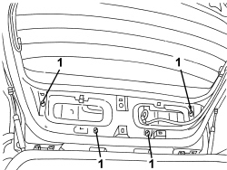

7210G76 REAR SPOILER - R.R.
- Path
- Procedures > 72 PANELS AND FRAMES > 7210 REMOVING-REFITTING > 7210G ACCESSORY PARTS > 7210G76 REAR SPOILER - R.R.
- Kind
- repair procedure (removal / refitting; the operation number is the code)
- Applies to
- all engines; all production periods; only with equipment: Station Wagon
- Interactive page
- https://sloeber94.github.io/elrnDB/#/939005555
Applies to: all engines; all production periods; only with equipment: Station Wagon
 Removing
Removing
 Refitting
RefittingOp. 7040G36 BULB HOLDER FOR LOAD CARRYING COMPARTMENT lighting on tailgate - R.R.
Op. 7015A05 TAILGATE LOWER INTERIOR PANEL-R R
Op. 7015A06 TAILGATE UPPER INTERIOR PANEL - R.R.
1. Unscrew the rear spoiler fixing bolts.

Applies to: all engines; all production periods; only with equipment: Station Wagon
- Lower the tailgate.
1. Move the spoiler (1a) in the direction shown by the arrow, raise it slighty and release the clips (1b) from their housings (1c).
2. Disconnect the electrical connection.
Description | Component |
|---|---|
ADDITIONAL REAR LIGHT (THIRD BRAKE LIGHT) |
3. Disconnect the rear windscreen washer fluid pipe.
4. Remove the rear spoiler.

Applies to: all engines; all production periods; only with equipment: Station Wagon
Refitting
Removing- Check that the spoiler is not damaged.
- Connect the rear windscreen washer fluid pipe.
- Connect the electrical connection.
- Correctly position the rear spoiler and clip the clips into their housings.
- Raise the tailgate.
- Tighten the rear spoiler bolts.
Component | Fastening | dia | Value (daNm) | Validity |
|---|---|---|---|---|
REAR SPOILER | Bolt | M6x14 | 0.7 ÷ 1.1 |
Component | Fastening | dia | Value (daNm) | Validity |
|---|---|---|---|---|
REAR SPOILER | Bolt | M5x12 | 0.3 ÷ 0.5 |
Op. 7015A06 TAILGATE UPPER INTERIOR PANEL - R.R.
Op. 7015A05 TAILGATE LOWER INTERIOR PANEL-R R
Op. 7040G36 BULB HOLDER FOR LOAD CARRYING COMPARTMENT lighting on tailgate - R.R.
Topics linked from this page (4)
- 7015A05 TAILGATE LOWER INTERIOR PANEL-R R
- 7015A06 TAILGATE UPPER INTERIOR PANEL - R.R.
- 7040G36 BULB HOLDER FOR LOAD CARRYING COMPARTMENT lighting on tailgate - R.R.
- F040 ADDITIONAL TAIL-LIGHT ('THIRD BRAKE LIGHT')